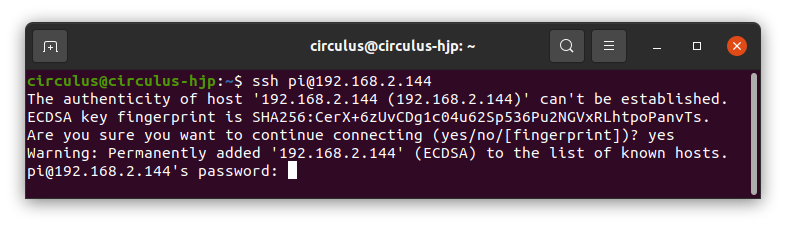

기본설정 및 부가설정¶
기본 설정¶
파이보 조립 이후 파이보를 사용하기 위한 기본적인 설정 방법에 대해 안내합니다.
무선 인터넷(wifi)을 연결합니다.
microSD카드를 USB 어뎁터에 연결하고, 이를 컴퓨터에 연결합니다.

microSD카드의
boot디렉토리에서wpa_supplicant.conf파일을 수정합니다.country=KR ctrl_interface=DIR=/var/run/wpa_supplicant GROUP=netdev network={ ssid="YOUR_NETWORK_NAME" psk="YOUR_PASSWORD" key_mgmt=WPA-PSK }
YOUR_NETWORK_NAME: 접속하려는 wifi 이름을 입력합니다.YOUR_PASSWORD: 접속하려는 wifi의 비밀번호를 입력합니다.
예시:
country=KR ctrl_interface=DIR=/var/run/wpa_supplicant GROUP=netdev network={ ssid="circulus" psk="password1234" key_mgmt=WPA-PSK }
<주의> microSD카드로 부팅을 하게되면
wpa_supplicant.conf파일이 사라집니다.만약 새로운 네트워크에 접속하려면,
wpa_supplicant.conf.bak파일을 복사하여새로운
wpa_supplicant.conf를 만들어 wifi 설정 후 사용합니다.
파이보에 microSD카드 결합 후 전원을 켭니다.
파이보의 등 우측 부분에 microSD카드 삽입 포트에 결합합니다.
이 때, 사진과 같이 microSD카드의 금박 부분을 바라보는 방향으로 삽입합니다.
컴퓨터에서도 파이보와 같은 wifi 네트워크에 접속합니다.

컴퓨터에서 파이보로 ssh 접속 합니다.
SSH(Secure Shell)란, 원격지 호스트 컴퓨터에 접속하기 위해 사용되는 인터넷 프로토콜입니다.
PC로 파이보에 접속하여 사용하기 위해 SSH를 사용합니다.
터미널 창을 켜고 다음과 같이 입력합니다.
<참고> 여기서 터미널은 운영체제마다 다릅니다. windows에서는 PowerShell이고, linux에서는 Terminal 입니다.
ssh pi@xxx.xxx.xxx.xxx

이 때,
xxx.xxx.xxx.xxx에는 파이보의 IP 주소를 입력합니다.이 숫자는 파이보 가슴의 OLED에서 확인할 수 있습니다.

IP를 입력하면, 다음과 같은 메시지가 출력됩니다.

처음으로 파이보에 ssh로 접속할 때 출력되는 메시지로, 보안키를 생성한다는 메시지 입니다.
yes를 타이핑하여 보안키를 생성합니다.
패스워드를 입력합니다.
파이보를 처음 실행시킬때 기본 비밀번호는
raspberry로 설정되어있습니다.이 때 타이핑을 해도 반응이 없어보이지만 입력되는 중이기 때문에, 그냥 비밀번호를 타이핑하고 엔터를 치면 됩니다.

연결이 완료되면 위 그림과 같이 코드 맨 아래에
pi@raspberrypi:~ $가 출력됩니다.
부가 설정¶
부가적인 기능을 사용하거나 패키지, 도구를 재설치하는 방법에 대해 안내합니다.
TTS(텍스트를 음성으로 변환), STT(음성을 텍스트로 변환) 등의 기능을 사용하기 위한 설정을 합니다.
openpibo의 TTS와 STT는 KAKAO에서 제공하는 서비스를 사용합니다.
해당 서비스를 이용하기 위해 kakao developers에 회원가입 후 REST API KEY를 발급받아
config.json에 저장합니다.해당 설정을 하는 방법은 여기를 참고해주세요.
각종 x-openpibo 패키지와 도구들을 설치하는 방법입니다.
파이보 제품을 받았을 때 기본적으로 설치가 되어 있지만,
데이터를 잃어버리거나 실수로 중요한 파일을 수정했을 경우 패키지와 도구를 재설치 할 때 사용합니다.
패키지 설치
패키지는 파이보를 조작하는 기능이 있는 파일들입니다.
파이보의 모터를 움직이거나, 오디오를 재생하는 등의 기능을 할 수 있도록 합니다.
$ sudo pip3 install git+https://github.com/themakerrobot/x-openpibo # 또는 $ git clone https://github.com/themakerrobot/x-openpibo.git # 패키지 파일 다운로드 $ cd x-openpibo # 다운받은 패키지 폴더에 접근 $ sudo python3 setup.py install # 패키지 설치
추가 도구 설치
openpibo-tools
파이보를 다루는데 여러가지 도움을 주는 도구모음입니다.
파이보 조립 후 조립이 잘 됐는지 확인하거나, 파이보의 모션을 만드는 등의 일을 할 수 있습니다.
$ git clone https://github.com/themakerrobot/openpibo-tools.git
openpibo-examples
패키지를 사용한 예제 코드들의 모음입니다.
패키지를 어떻게 사용해야 하는지 알고 싶을 때 참고할 수 있습니다.
참고로,
openpibo-files의 데이터를 사용하기 때문에,예제코드를 사용하기 전에
openpibo-files도 정상적으로 설치되어있어야 합니다.$ git clone https://github.com/themakerrobot/openpibo-examples.git
openpibo-files
샘플로 사용할 수 있는 간단한 데이터 모음입니다.
오디오, 아이콘, 이미지 파일이 들어있습니다.
$ git clone https://github.com/themakerrobot/openpibo-files.git